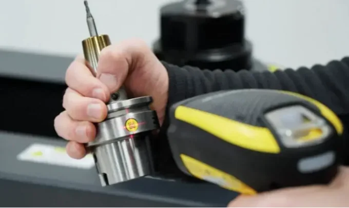
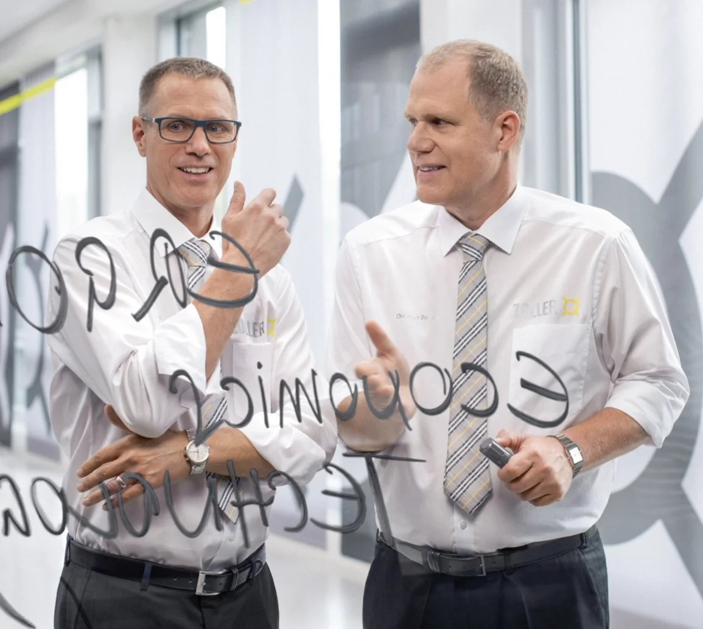
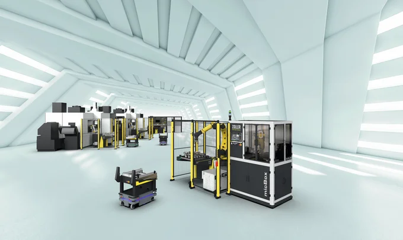
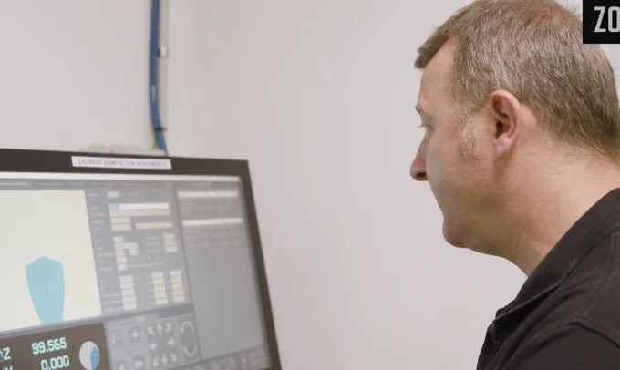

ZOLLER · Líder tecnológico
Con un sistema para alcanzar el máximo rendimiento
Aumente la eficiencia de sus procesos de herramientas con las soluciones del líder tecnológico: ZOLLER.
Precisión
al µm.
Aumente la eficiencia de sus procesos de herramientas.
Un sistema.
Todos los procesos.
Con las soluciones del líder tecnológico: ZOLLER.
Descubrir el sistemaTecnología de primera para cualquier tipo de fabricación
Los efectos de eficiencia de ZOLLER en los procesos de herramientas son elevados. Por eso, cualquier inversión se amortiza rápidamente. Incluso con una sola máquina CNC, las soluciones de ZOLLER reducen los costos y el tiempo de inactividad de las máquinas.

En ZOLLER, la calidad es una promesa,
no un privilegio.
ZOLLER en el mundo
Éxitos de clientes con ZOLLER
Mayores ganancias, más pedidos, menos tiempo invertido, menores costos de producción: ZOLLER aumenta la eficiencia de sus clientes en todo el mundo.
Equípese con alta velocidad
30 %
Un ZOLLER »hyperion« reduce en esta proporción los tiempos de preparación en SycoTec. Las herramientas de torneado y los soportes de torneado múltiples se miden en el aparato de ajuste y medición horizontal. A continuación, se fabrican motores miniatura de alta velocidad.
Reducción de costos de personal
83 %
Esta es la reducción potencial en los costos de personal para la inspección de herramientas en tres turnos si utiliza la solución de automatización »roboSet 2«.
Retorno de inversión
9 meses
Es el tiempo medio que tarda en recuperarse la inversión de un aparato de preajuste y medición »smile«. Fabricación en un turno con una máquina CNC. Con dos máquinas, el tiempo se reduce a la mitad.
Aumento significativo de las ventas
1 millón de dólares
La empresa familiar ProCam, con sede en Michigan (EE. UU.), ha aumentado su facturación en un millón de dólares estadounidenses en los dos años transcurridos desde la adquisición de una »smile 420«. Gracias a la reducción de los tiempos de configuración y del tiempo de inactividad de las maquinas herramientas, ProCam pudo producir más piezas.
El mundo de productos ZOLLER en 3D
59 productos.
59 productos.
7 áreas temáticas.
Una nave.
Desplácese: la cámara recorre todas las áreas temáticas del showroom 3D.
01 / 07
Ajuste y medición
Reduzca los tiempos de preparación en un 40 % o más.
12 productos
02 / 07
Gestión de herramientas
Conectar procesos, asegurar la calidad y fabricar más rápido.
20 productos
03 / 07
Comprobación y medición
Documente la calidad y cree gemelos digitales.
15 productos
04 / 07
Automatización
Automatización flexible y modular para herramientas de corte.
8 productos
05 / 07
Técnica de contracción de herramientas
Sujeción y liberación térmica de herramientas en tiempo récord.
2 productos
06 / 07
Porta Herramientas
Portaherramientas con »idChip«: la interfaz perfecta para su manufactura digital.
1 producto
07 / 07
Tecnología De Balanceo
Cuide los husillos y asegure la calidad con las mejores balanceadoras del mercado.
1 producto
Mundo de productos 3D
Recorra usted mismo
Recorra usted mismo
la nave.
Haga clic en cualquier equipo, lea los detalles y recorra todas las áreas en modo paseo.

Aumento de la productividad gracias a los aparatos de ajuste y medición de ZOLLER
La calculadora de rentabilidad de ZOLLER calcula el potencial de ahorro del funcionamiento normal de su empresa.
Mayor productividad en fresado, giro y rectificado

Michael Mauth, director general de Mauth Werkzeug- Schleiftechnik en OberndorfLa automatización es indispensable para trabajar de manera competitiva a nivel internacional».

Ing. Frank Schaefer, miembro de la dirección, LIDU Maschinenbau Lienenbrügger GmbH en DülmenLa digitalización con los sistemas de software de ZOLLER contribuyó de manera decisiva a una producción mucho más rentable».

Balanceo
Balanceo de herramientas al más alto nivel
«toolBalancer» líder mundial en tecnología de vanguardia en lo que respecta al balanceo de herramientas. Con él se obtienen resultados de balanceo de 0,4 gmm, además de una gran ergonomía y un manejo sencillo. Todos los »toolBalancer« cuentan con la certificación TÜV y UL/CSA.
< 0.4 gmm de calidad de balanceo
»powerShrink« contrae las herramientas a una velocidad récord y con un consumo mínimo de energía. Los portaherramientas térmicos se calientan y enfrían de forma controlada, lo que garantiza una alta eficiencia en el proceso de contracción.
Mensajes de actualidad

ZOLLER »micBox« y »coraVarion« impulsan una mayor productividad en la fabricación
Leer más
Grupo DMP EGILE apuesta por la automatización y la gestión inteligente de herramientas con ZOLLER
Grupo DMP EGILE comparte su experiencia con la incorporación de un sistema de medición y gestión de herramientas de ZOLLER (TMS).
Leer más